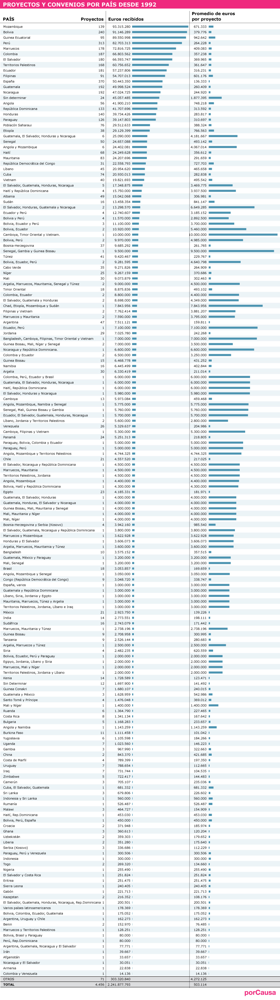

Datos de las subvenciones ordinarias concedidas por la Agencia Española de Cooperación Internacional a proyectos de desarrollo desde 1992. En esta categoría entran las subvenciones “en desarrollo de la política exterior del gobierno”, las “sometidas a publicidad y concurrencia” y las destinadas a actividades de “acción humanitaria”. Se incluyen, por tanto, los convenios plurianuales firmados con algunas organizaciones. Fuente: Plan Anual de Cooperación Internacional (PACI) / AECID
